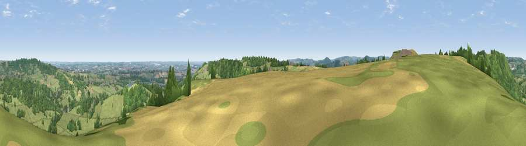

Viewpoint near Ashover Hay
#11942 in England · top 7% of its area beats it · near Ashover Hay · footpathWhere it is
The exact computed spot (SK 34625 60775). Click the marker for map links.
Public access: a public right of way passes within 56 m of this spot. Computed from Natural England's CRoW access layer and OpenStreetMap rights of way — not the legal definitive map. Always verify locally.
The view, rendered

A 360° render of this exact spot computed from the terrain model, tree cover and land cover — summer colours, afternoon light, calibrated against photographs of famous viewpoints. Real trees, hedges and buildings will differ in detail.
The panorama
Grey silhouette: terrain skyline in each direction (720 bearings, Earth curvature and refraction included). Dashed green: skyline with trees (+15 m) and buildings (+8 m) as obstacles. Blue strip: how far the ground is visible on each bearing.
Where the view opens
Wedge length = distance to the farthest visible ground on that bearing (vegetation-aware). Rings at 10, 25 and 50 km.
What fills the view
57% grassland · 35% woodland · 6% cropland · 2% built-up
Angular shares of the visible panorama (visual magnitude), not map area. Landscape diversity 0.42 (0–1 Shannon).
Key numbers
More beautiful places nearby
The staircase of upgrades: each row has a higher view potential than everything closer. Driving times are estimates from straight-line distance, calibrated against real road routing — check an actual route before setting out.
| Place | Direction | Drive | Score |
|---|---|---|---|
| Viewpoint near Milltown | NNW · 1 km | ~4 min | 61.5 |
| Viewpoint near Ashover Hay | SSE · 1 km | ~4 min | 62.1 |
| Viewpoint near Brackenfield | SE · 2 km | ~5 min | 68.3 |
| Crich Stand | S · 6 km | ~12 min | 73.0 |
| Alport Height | SSW · 10 km | ~19 min | 73.9 |
| Tissington Hill | WSW · 21 km | ~35 min | 75.5 |
| Viewpoint near Mow Cop | W · 49 km | ~69 min | 78.9 |
| Viewpoint near Mow Cop | W · 49 km | ~70 min | 80.2 |
53.14300, -1.48381 · source: screening · position refined by local search. Computed location — check access rights before visiting.